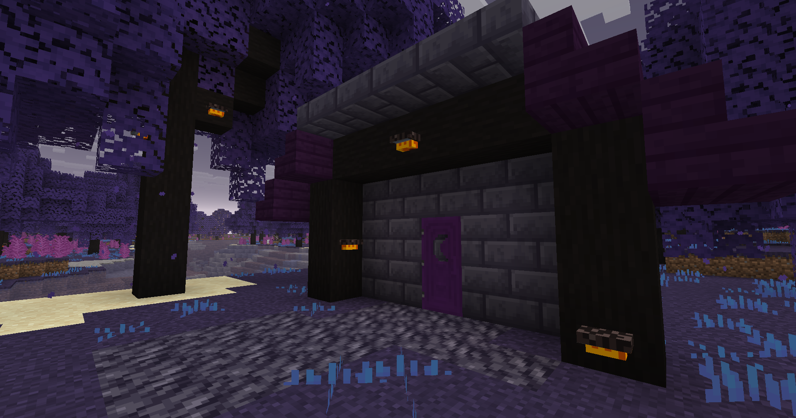
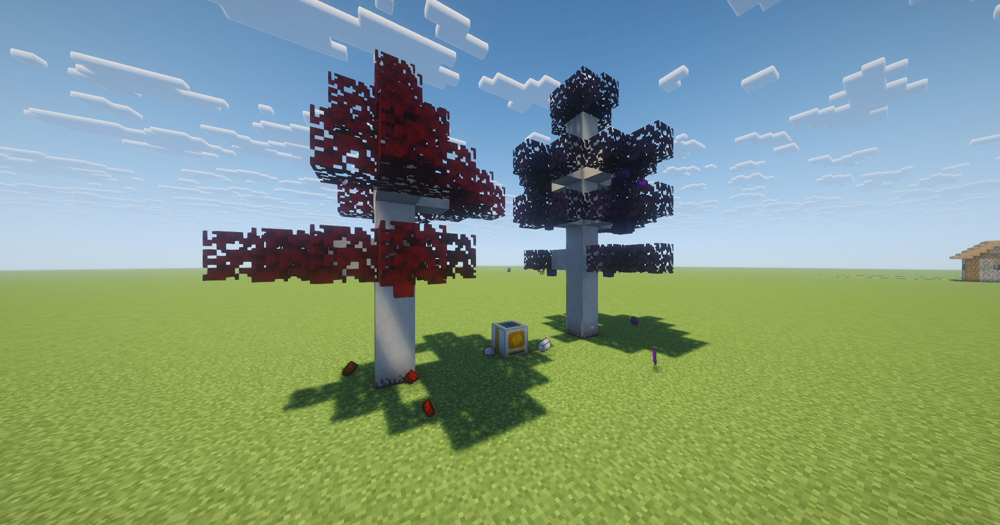

Warp's Mods
The home of all of my hobby mods and creations! All of my mods are always in early development and may have bugs and errors.

Fabric
0.0.241
Vesper Wilds
A hobby Fabric mod that focused on adding new biomes and blocks to Minecraft.

Fabric
0.0.080
Cambium
A hobby Fabric mod that is focused on SolarPunk. New take on technical mods with new styles on machines and resource generation.